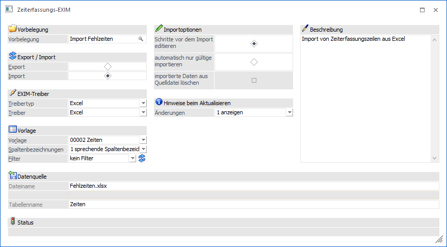
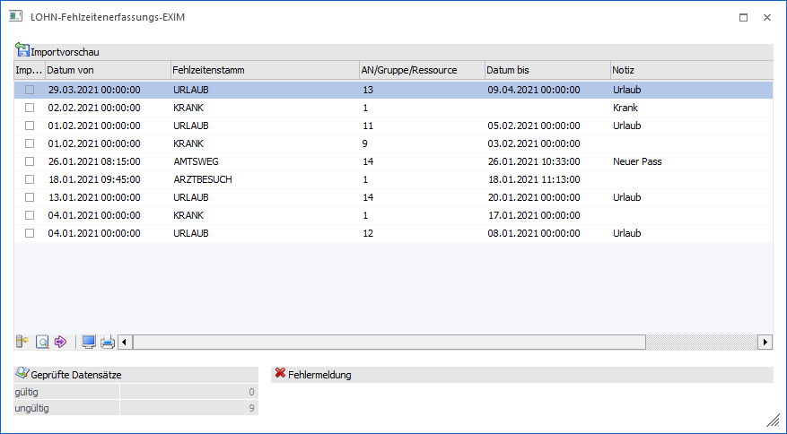

Wird diese Option gewählt, werden alle vorhandenen Datensätze importiert.

EXIM-Treiber
Ø Treibertyp
In diesem Bereich kann gewählt werden, ob der Export über den Treibertyp "Excel", "XML" bzw. "OBDC" erfolgen soll. Die weiteren Einstellungen dazu erfolgen im Feld "Treiber".
Ø Treiber
Hier kann auswählt werden, welches Datenformat beim Export erzeugt werden soll. Abhängig von der Einstellung im Feld "Treibertyp" sind die Auswahlmöglichkeiten unterschiedlich.
Wurde als Treibertyp die Auswahl Excel" gewählt, so steht als Treiber ebenfalls der Eintrag "Excel" zur Verfügung.
Wurde als Treibertyp "XML" selektiert, so lautet der zugehörige Treiber "XML (Webservice)". Diese Treiber-Option kann nur in Verbindung mit einer Vorlage verwendet werden, die zuvor als "Webservice-Vorlage" angelegt wurde.
Für den Treibertyp "ODBC-Treiber" stehen alle ODBC-Treiber zur Auswahl, die im System installiert sind, z.B.:

Je nachdem, welcher Treiber gewählt wurde, wird die weitere Eingabe des Zielpfades und des Namens der Ausgabedatei bzw. Tabelle oder Datenbank gestaltet (Bereich Exportziel).
Beispiel
Wird das Format "MS-Access Treiber (MDB)" gewählt, erfolgt die Aufforderung, den Pfad, den Datenbanknamen, sowie den Namen der Tabelle anzugeben, in welcher die Datensätze ausgegeben werden sollen.
Wird z.B. das Format MS-SQL-Server gewählt, so muss der SQL-Servername, sowie der Datenbank- und Tabellenname eingetragen werden, etc. .
Ø Vorlage
Eingabe der Vorlage, die für den Export verwendet werden soll. Aus der Auswahllistbox kann eine der Vorlagen gewählt werden, die für den Im- oder Export von Erfassungszeilen erstellt wurde. Die Vorlagen selbst werden im Programm WinLine START über den Menüpunkt Vorlagen/Vorlagen Anlage angelegt.
Mögliche Felder der Vorlage:
|
Feld |
Beschreibung |
|
Von |
Datum / Uhrzeit Beginn Fehlzeit (die Uhrzeit ist abhängig von der Fehlzeit anzugeben) |
|
Bis |
Datum / Uhrzeit Ende Fehlzeit (die Uhrzeit ist abhängig von der Fehlzeit anzugeben) |
|
Fehlzeitenstamm |
Fehlzeitennummer (lt. Fehlzeitenstamm) |
|
Arbeitnehmer |
Personalnummer, 20stellig, alphanumerisch |
|
Dauer |
Optional kann die Fehlzeitendauer in der Einheit der Fehlzeit verwendet werden, falls diese von dem errechneten Wert abweicht. |
|
Notiz |
Hinterlegung einer zusätzlichen Bemerkung zur Fehlzeit |
|
Typ (Zeitart/Pause) |
Angabe des Zeitartentyps - Zeitart oder Pause |
|
Importoption |
Mit dieser Option kann bestimmt werden, wie mit zu importierenden Zeilen umgegangen werden soll. Wenn das Feld in der Vorlage nicht vorhanden ist, werden immer neue Zeilen angelegt. Wenn das Feld in der Vorlage vorhanden ist, dann wird abhängig vom Wert, der übergeben wird, die Zeile eingefügt oder upgedatet, wobei ein Update nur dann möglich ist, wenn AN/MA, Zeitart und von-Datum inkl. Uhrzeit gleich sind bzw. AN/MA, von Datum inkl. Uhrzeit mit abweichender Zeitart. Das Feld kann auch über die Vorlage vorbesetzt werden, idealerweise mit dem Wert "1 Zeile aktualisieren" (dann wird immer geprüft, ob Zeilen aktualisiert werden können, wenn nicht, wird neu angelegt). |
Hinweis:
Wenn das Feld "Dauer" in der Vorlage nicht vorhanden ist, dann wird die Dauer der Fehlzeit automatisch vom Programm ermittelt, wobei hier die Felder "von" und "bis" und die Einstellung der Fehlzeit (Einheit) berücksichtigt werden. Ist das Feld Dauer in der Vorlage vorhanden, dann muss auch ein Wert übergeben werden, weil sonst bleibt die Anzahl der Einheiten nach dem Import auf 0.
Achtung:
Im WinLine SMART TIME wird die Dauer immer gerechnet, unabhängig ob die Dauer in der Vorlage einen Wert aufweist oder nicht. Ausgenommen davon ist die Zeitart "Urlaub".
Ø Spaltenbezeichnungen
In diesem Feld kann festgelegt werden, ob, bzw. mit welcher Art von Spaltenbezeichnungen gearbeitet werden soll.
ü 0 - numerische
Spaltenbezeichnungen:
Die Exportdatei bzw. Tabelle erhält jeweils die
Spaltenbezeichnung, wie sie auch in den Tabellen der WinLine-Datenbank heißen.
Wenn Daten mit numerischen Spaltenbezeichnung importiert werden sollen, dann
sollte vorher ein Test-Export durchgeführt werden, damit bekannt ist, wie die
einzelnen Felder benannt werden müssen.
ü 1 - sprechende
Spaltenbezeichnungen:
Die Exportdatei bzw. Tabelle erhält jeweils die
Spaltenbezeichnung, die auch in der Vorlage definiert wurde. Beim Import muss
darauf geachtet werden, dass die erste Spalte (dort wird der Key (z.B. Konto-
oder Artikelnummer) gespeichert) der Bezeichnung in der Vorlage entspricht.
ü 2 - keine Spaltenbezeichnungen:
Diese Auswahlmöglichkeit steht nur bei Verwendung des Treibertyps "Excel"
zur Verfügung. Damit werden keine Spaltenbezeichnungen ausgegeben.
Importoptionen
Ø Schritte vor dem Import editieren
Wenn diese Option aktiviert ist, dann werden beim Importvorgang alle zu importierenden Zeilen in einer Tabelle angezeigt, wo sie weiter bearbeitet werden können.
Ø Automatisch nur gültige importieren
Wenn diese Option aktiviert ist, dann werden nur die Zeilen importiert, die vollständig korrekt sind.
Ø Daten aus Datenquelle löschen
Wird diese Option aktiviert, wird der Inhalt der Importdatei nach erfolgreichem Import gelöscht. Treten hingegen Fehler auf, wird der Inhalt nicht gelöscht. Ob die Option angewählt werden kann oder nicht, hängt auch vom verwendeten Treiber ab.
Hinweise beim Aktualisieren
Ø Änderungen
Mit dieser Option kann gesteuert werden, wie das Programm mit Hinweisen beim Import umgehen soll. Dabei sind drei Optionen möglich:
ü 0 nicht anzeigen
Beim Import
werden in der Importvorschau keine Hinweise nach der Prüfung angezeigt.
ü 1 anzeigen
Beim Import werden
in der Importvorschau nach der Prüfung Hinweise angezeigt. Diese können
sein:
- Zeile nicht gefunden -> wird neu angelegt
- Mehrfache Zeilen
vorhanden -> wird neu eingefügt
- Änderung von Datum bis
- Änderung von
Zeitart
Beim Doppelklick auf die Hinweisspalte wird das Zeitmanagement (ohne
Editiermöglichkeit) aufgerufen, und die betroffene(n) Zeile(n)
angezeigt.
Wenn eine Zeile aktualisiert werden soll, die so schon bereits
vorhanden ist (gleicher AN/MA, gleiche Zeitart, gleiche von - bis Datum/Uhrzeit)
wird kein Hinweis angezeigt.
ü 2 anzeigen und drucken
Mit
dieser Option werden die Hinweise nicht nur in der Importtabelle angezeigt,
sondern auch beim Importprotokoll mit angedruckt.
Datenquelle
Ø Beschreibung von Datei bzw. Datenbank.
In Abhängigkeit der am PC installierten ODBC-Treiber werden Felder angezeigt, in denen die Quelle (Bereich, aus dem die Daten in die WinLine importiert werden) beschrieben werden.
Bei der Wahl von Datenbanken als Quelle, müssen der Datenbankpfad, der Datenbankname und die Tabellennamen angegeben werden.
Achtung:
Der ODBC-Treiber kann zwar innerhalb von Datenbanken (ACCESS oder EXCEL) Tabellen erzeugen und diese Tabellen mit Datensätzen füllen, er kann aber nicht die Datenbank selbst erstellen. Diese muss bereits vorhanden sein.
Hinweis:
Je nachdem, welche ODBC-Treiber verwendet werden bzw. welche ODBC-Treiber-Version verwendet wird, kann es zu ungewünschten Verhalten des Export/Imports kommen, wenn Sonderzeichen im Verzeichnisnamen oder im Datenbankname vorkommen. Aus diesem Grund wird - wenn solche Sonderzeichen verwendet werden - eine entsprechende Warnmeldung ausgegeben:

Buttons
Ø OK
Durch Anklicken des OK-Buttons wird der Import gemäß Einstellungen durchgeführt. Im Bereich Status wird die jeweils durchgeführte Aktion angezeigt.
Wurde die Option "Schritte vor dem Import editieren" gewählt, so werden alle Zeilen, die importiert werden sollen, in einer Tabelle angezeigt:

Buttons innerhalb der Importvorschau
Ø aktuelle Zeile prüfen
Die derzeit im Fokus stehende Zeile der Importvorschau wird hinsichtlich etwaiger Fehler überprüft.
Ø alle Zeilen prüfen
Nachdem diverse Änderungen/Anpassungen innerhalb der Importvorschau vorgenommen worden sind, können alle enthaltenen Datensätze durch Klicken dieses Buttons erneut geprüft werden. In der Spalte Fehler/Hinweis werden dann je nach Einstellung "Hinweise beim Aktualisieren" Informationen angezeigt.
Ø nächster Fehler
Sind mehrere Fehler vorhanden, können diese nacheinander begutachtet werden. Dabei wird der Fokus auf den nächsten fehlerhaften Datensatz gelegt. Sind alle Fehler in den zu importierende Datensätzen bereinigt, dann ist der Button nicht mehr anwählbar und "inaktiv" (gegrayed) dargestellt.
Ø Fehlerliste Bildschirm
Über diesen Button können enthaltene Fehler über ein Fehlzeitenerfassung-EXIM-Fehlerprotokoll am Bildschirm ausgegeben werden. Darin wird Bezug auf die Zeile, den Eintrag und die Fehlermeldung genommen.
Ø Fehlerliste Drucker
Über diesen Button können enthaltene Fehler in einem Fehlzeitenerfassung-EXIM-Fehlerprotokoll am definierten Drucker ausgegeben werden. Darin wird Bezug auf die Zeile, den Eintrag und die Fehlermeldung genommen.
Ø Zurück
Nach dem Klicken wird die Importvorschau geschlossen und der Import kann neu definiert werden.
Ø Import
Dieser Button startet das Einlesen der Datensätze in die WinLine Datenbank. Gleichzeitig mit dem Import findet auch eine Prüfung der Datensätze statt, bei welcher alle Datensätze (nach den erforderlichen Richlinien der WinLine Applikationen) geprüft werden.
Ungültige Datensätze werden für den Importlauf automatisch deaktiviert, d.h. das Häkchen in der Spalte "Import" wird entfernt.
Ø Ende
Durch Drücken der ESC-Taste wird das Fenster geschlossen, alle Auswahlen gehen verloren.
Ø Eingaben initialisieren
Durch Anklicken der Zurücksetzen-Taste werden alle getätigten Einstellungen verworfen. Es kann eine neue Selektion durchgeführt werden.